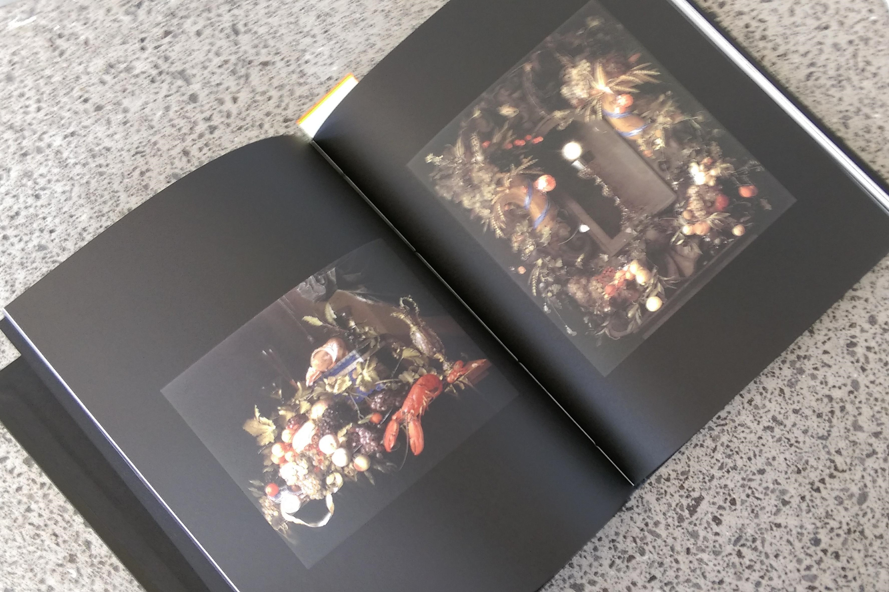
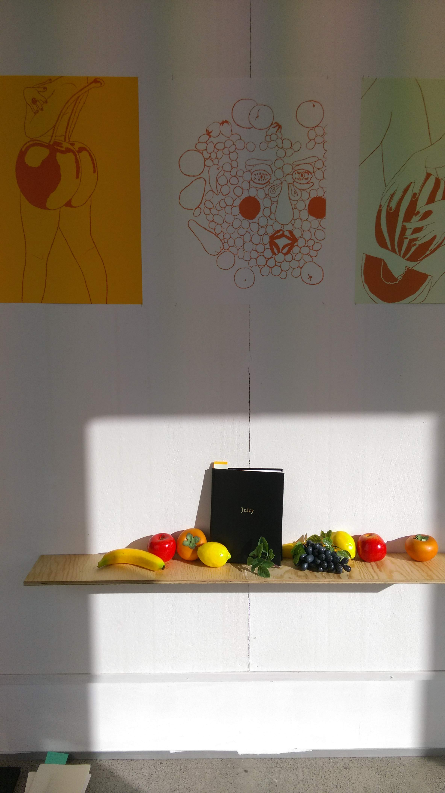
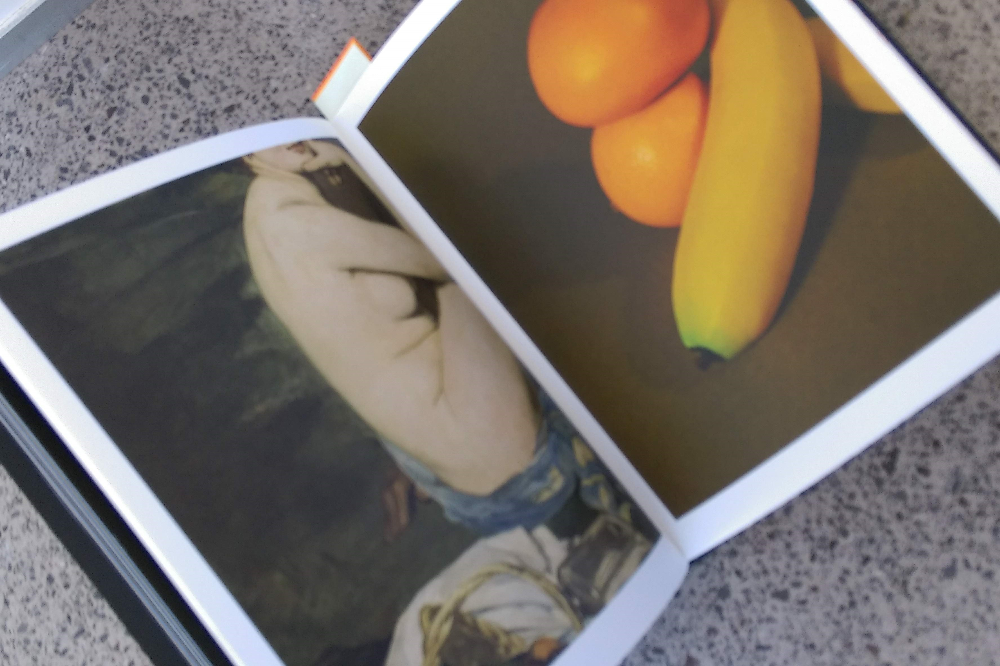

Emma Kim
emmakim1209@gmail.com
Juicy
203.2x254mm
Publication
420x594mm
Poster series
The Juicy Publication was designed with
the final format of print publication from
the start. It was born from a simple idea to
represent the topic of ‘Fruits’ in unique and
refreshing perspective. The broad idea then
developed more into focusing around the
visual relationship between fruits and the
human body. The designs play around with
fluid, bodily elements and fruity colours. The
process of taking photographs for Bodily Fruits
and PEEL allowed me to experiment with
the flexible aspect and the organic shapes
of fruits. Most of compostions were heavily
influenced by fine art catalogues and print
materials.
During the process of printing the final
product, I’ve decided to print the first
three chapters on uncoated paper as it
complements the visual quality of the images
in those chapters and the last chapter ‘PEEL’
on coated paper in order to mimic the gloss
and shine from the cocktails. The colours of
the posters corresponds with the bookmarks
in the ‘Fruity Music Videos’ chapter. The
bookmarks gives a pop of colours to the clean
black exterior of the book as much like the
visual order of the content of the book; moving
from dark black pages to more bright and
colourful pages.